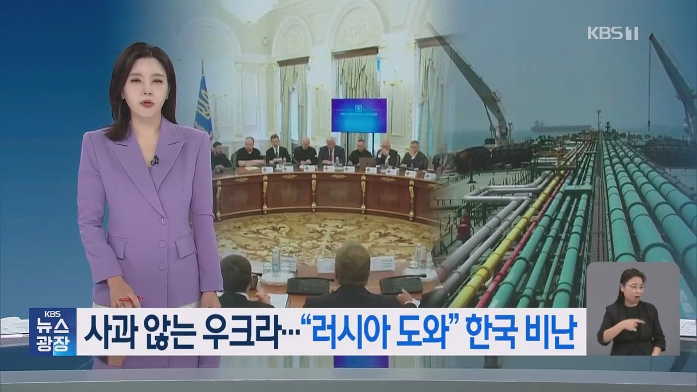
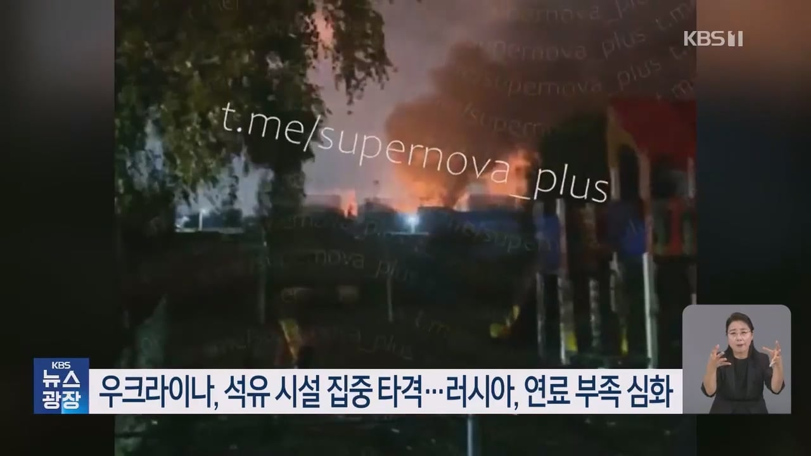
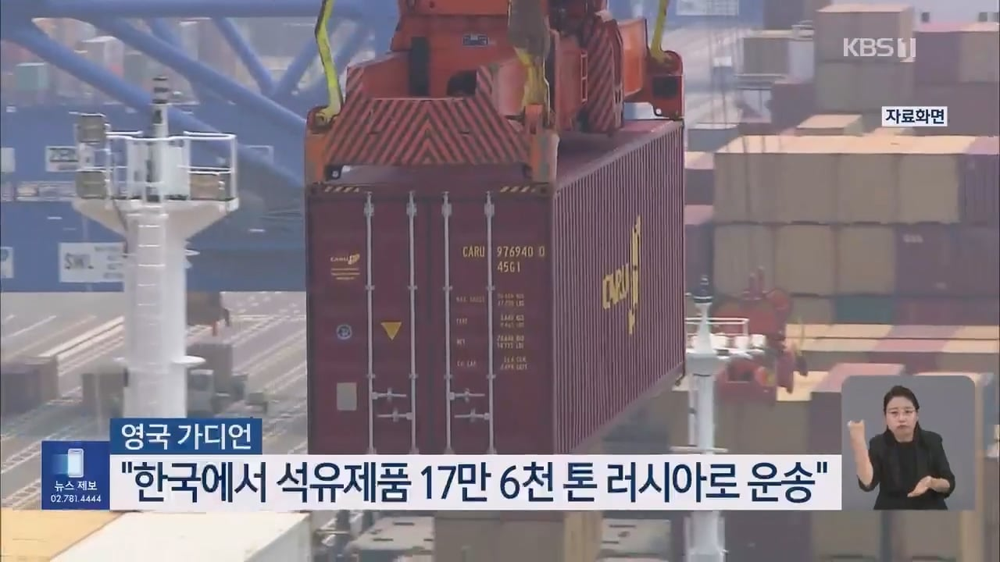
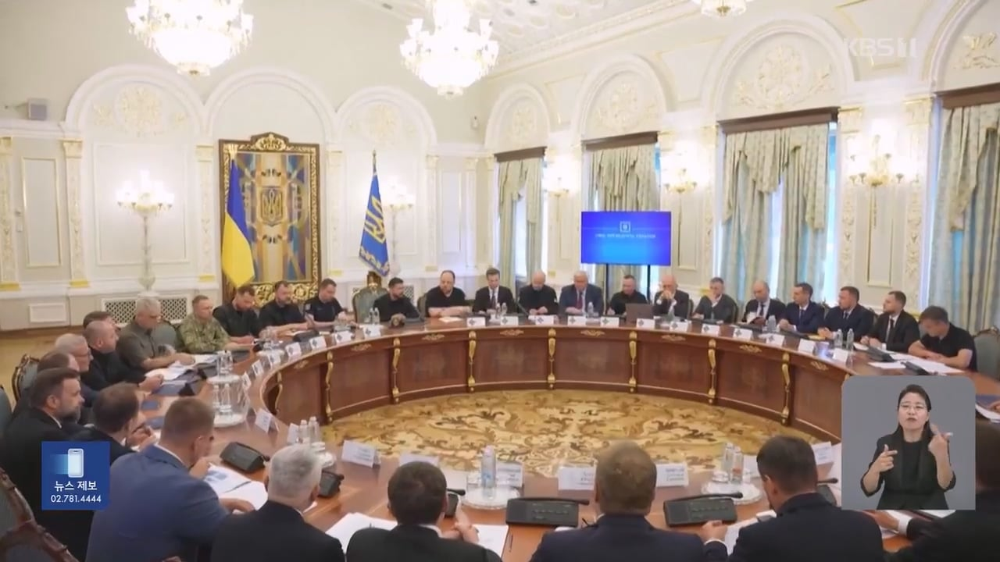
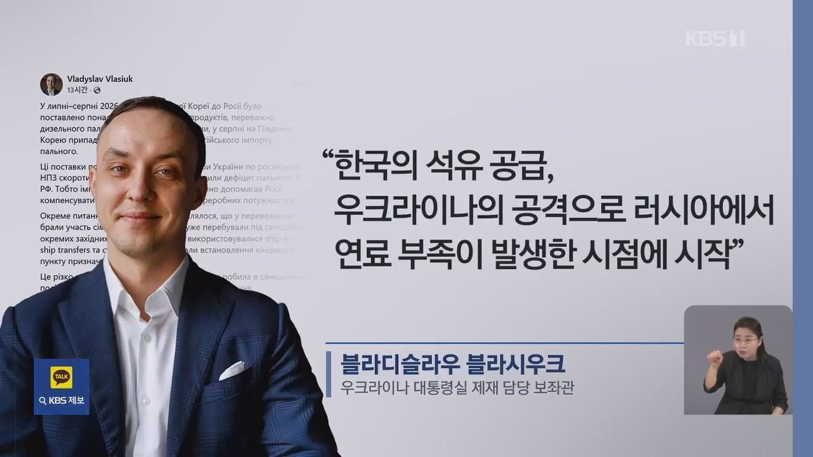
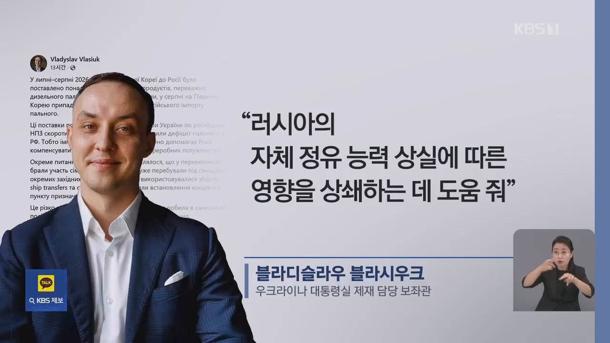
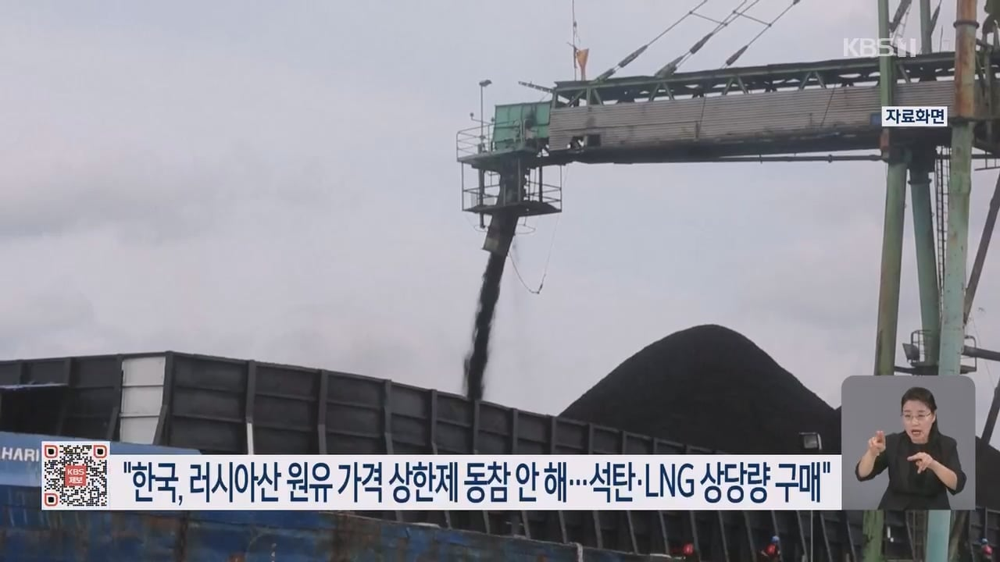

또 나왔다 만만한 한국 때문이야
우크라비에트
우리 입장에서 저렇게 하면 땡큐지.
전쟁이후에 러샤랑 말하기도 편함
외교를 양자택일로 보는 애들 많네.
미국이 중국 싫어한다고 중국에게 등 돌릴 수 있음?
반대로 중국이 미국 싫어한다고 미국한테 등 돌릴 수 있냐고.
러시아가 북한한테 퍼주고 있다지만 우리도 그만큼 메리트가 있으니 그냥 적당히 하는거지. 우리나라는 그냥 중립 스텐스 유지하면서 양쪽 똥구멍 빨아재끼면 된다고.
ㄹㅇ 외교에는 영원한 적도 영원한 친구도 없다는걸 모르는 사람이 너무 많음
ㄹㅇ 저위에 어떤개붕이는 이걸 모름 한국이 수출로 먹고사는나라라 그냥 두루두루 친하게 지내야해서 머리좋은 사람이 여기저기 친하게지내면서 돈벌어야하는데 방구석 개붕이가 얘랑은 수교끊어라 우크라가 불쌍하지도않냐 ㅠㅠ
이러고있음
외교에 있어서 이념이나 사상도 챙겨서 서방국가와 관계 유지하는것도 중요하지만
국익이 최우선이 되어야 실리를 챙김, 지금 정세에서 이념과 기름값,수출실적을 바꾸자고 하면 여론이 좋겠음?
우리 밥그릇을 다 깨가면서 한쪽으로 쏠리는건 좋은 외교라고 하긴 힘들지
전쟁 끝나도 우크라이나는 도움 안될듯
우리한태만 지랄이여 유럽새끼들도 개꿀빨고 할거 다하드만
우리나라가 우크라이나에 지원한 돈만 약 1조원, 못 받을 거 각오하고 준 차관까지 하면 수조원임. 의약품, 식량, 발전기, 구급차, 민수용 차량, 군복, 방독면, 방호목, 헬맷, 지뢰제거기까지 다 퍼줬고 개인이나 기업, 지자체 등에서도 수천만원~수십억 단위로 지원함.
규모로 따지면 무상지원은 전세계 기준 10위, 아시아에선 일본에 이어 2위임.
하지만 우크라 저 새끼들 주일 우크라 대사가 야스쿠니 신사 참배하고 혐한 발언에 주한 우크라 외교관은 술집에서 직원, 경찰관 폭행까지 함. 북한군 포로 송환 문제도 그렇고 슬라브식 외교 못 버림. SNS 상에서도 탄약과 차량 지원 못한다고,
'한국 놈들은 난징 대학살 언제 중국에게 사과하는데?'
'다음 참수 대상은 한국이다'
'한국의 신이 심판한다' 이딴 소리나 지껄임.
그리고 얼마나 우리나라를 좆으로 알았으면 북한이 우크라이나 전쟁에 정예 보냈으니 이제 너네도 북진통일 할 수 있다 ㅇㅈㄹ 하면서 지네가 받을 압박 줄이겠답시고 개병신 같은 소리까지 함.
러시아가 분명한 악은 맞음. 우리나라 입장에서도 북한으로 군수 물자, 기술 제공해서 한반도 위협이 된 것도 사실임.
시발 그래도 양심이 있으면 여기까지라도 도와줘서 너무 고맙다 이렇게 나와야 정상 아님? 저새끼들 말하는 거 보면 러시아 보다 우리나라를 더 증오함.
저런거 도와준 것들이 병신이지 ㅋㅋㅋ
여기도 많았잖아 ’영면하소서 우크라 전사들이여 ~ ㅠ‘ ㅋㅋㅋㅋㅋㅋㅋㅋ
븅신들임. 외교 ㅈ같이 해놓고 지랄은.
저딴 소리 해봐야 니들한테 득될거 있냐? 머리에 뭐 들었는지 모르겠다.
꼬우면 한국 제재하등가 ㅋㅋ
이러면 우리도 무기 못줘
러시아 더 도와주자 ㅋㅋ 우크라 언제 망하나?
징징이누
그런데 대한민국 입장에서는 우크라이나보다 러시아랑 경제 교류하는게 더 큰도움이 되긴함
우크라이나같은 병신국가에 정의가 있다면 세상에 정의는 개쳐망한거임 ㅇㅇ;